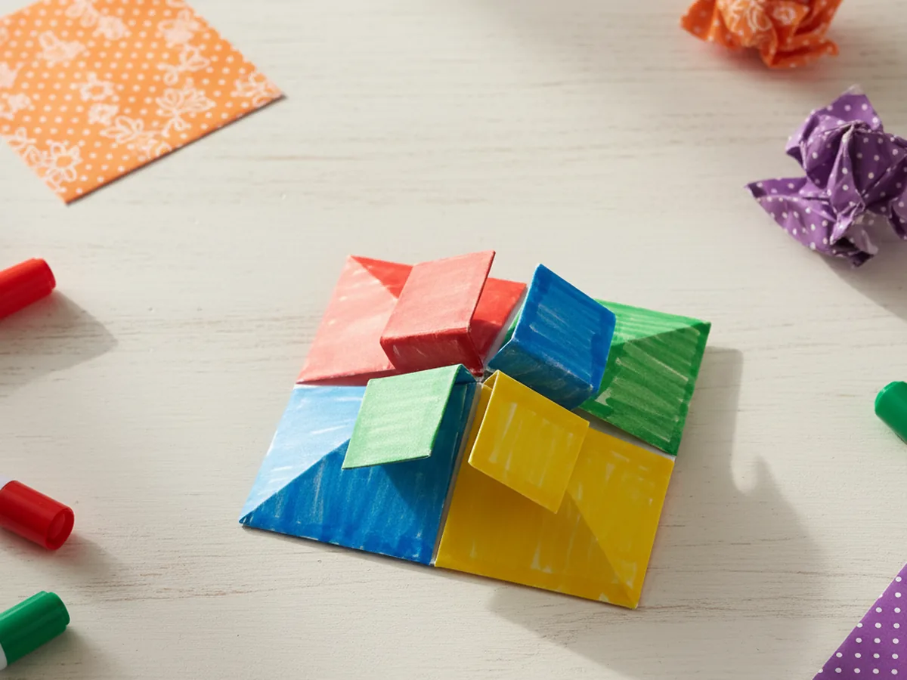
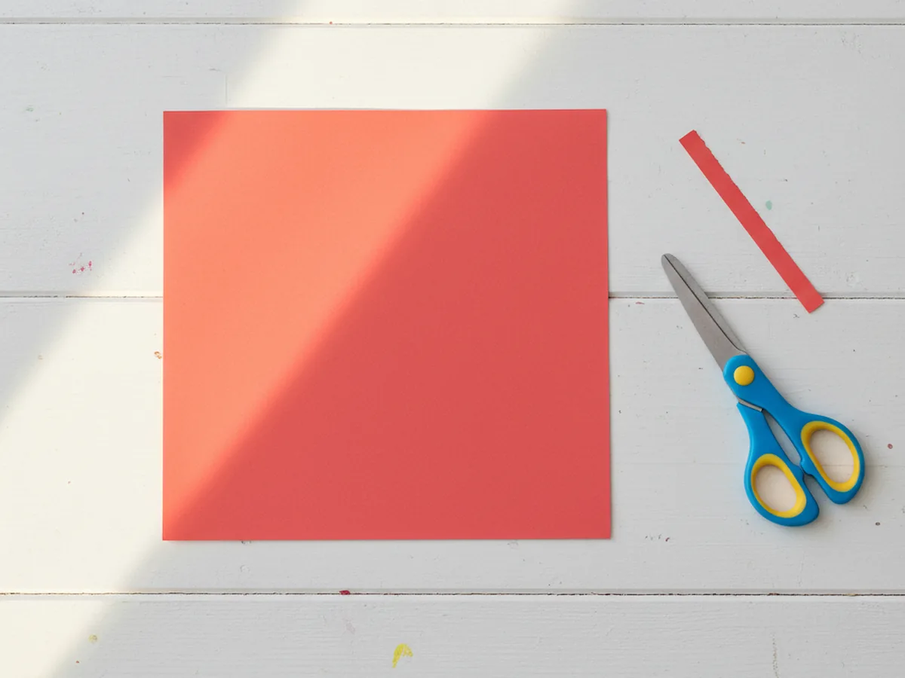
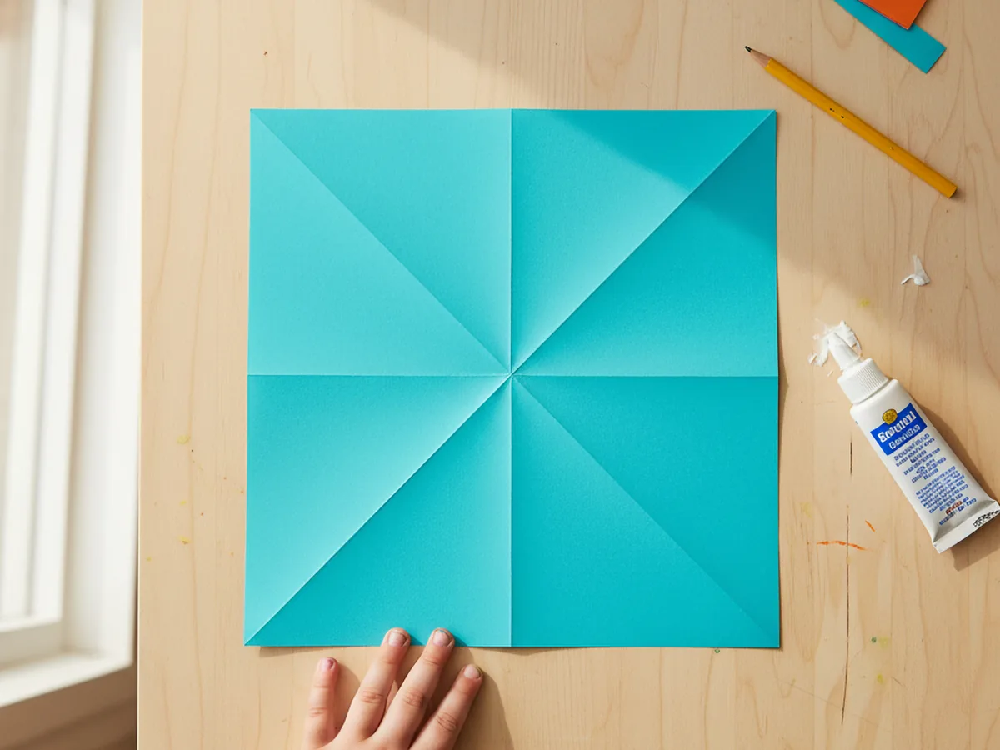
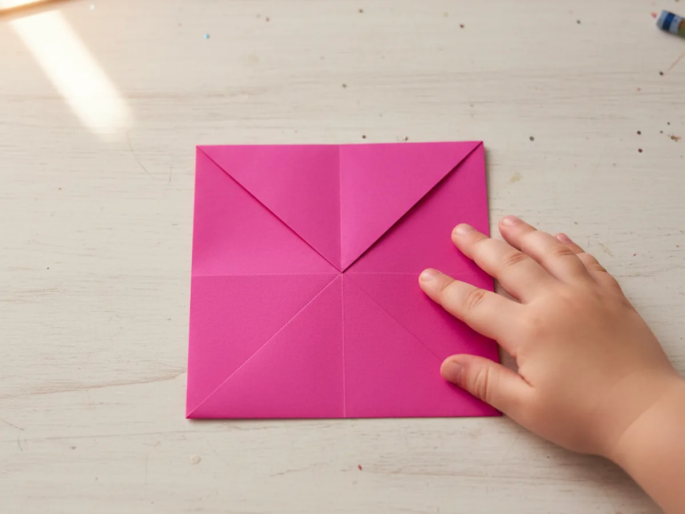
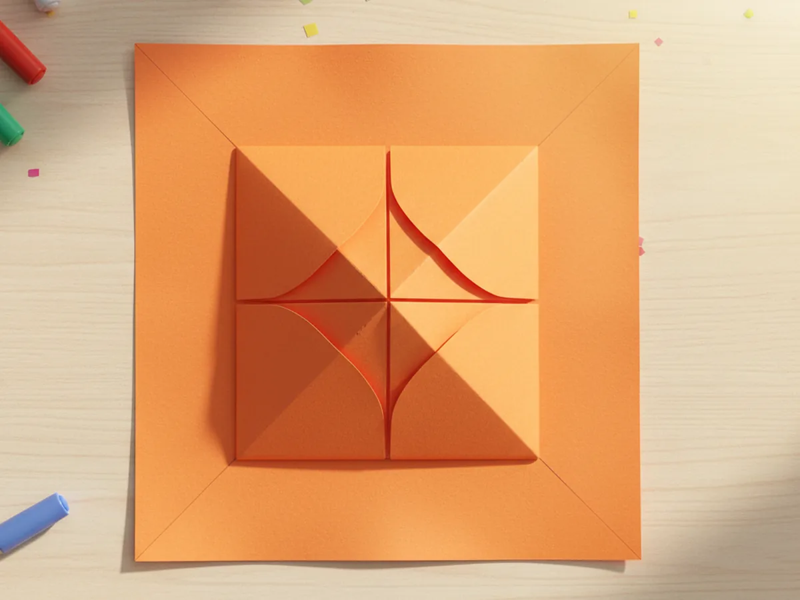
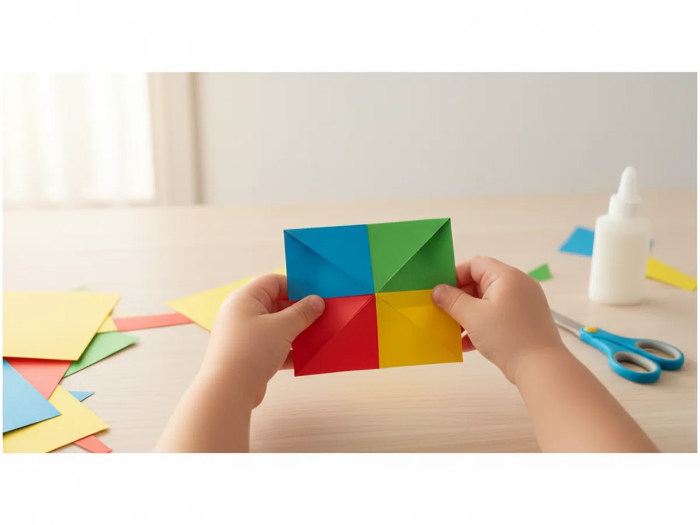
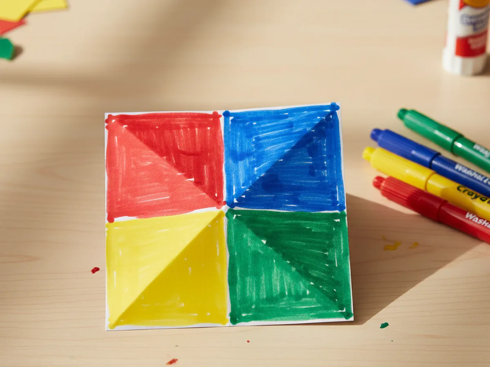
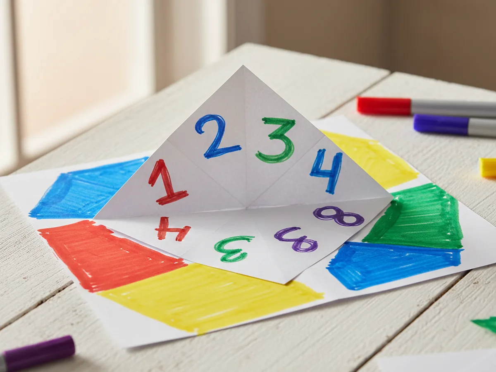
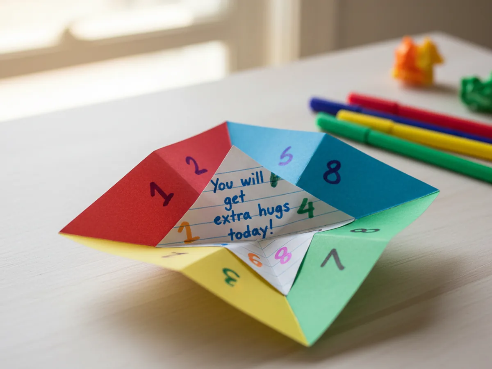

If your kids love little surprises, secret messages, and games they can play over and over, this fortune teller paper craft is going to be one of those projects you both come back to all the time. It uses just one square of paper, takes about 25 minutes to fold and decorate, and gives you a sweet handmade game with hidden fortunes tucked inside. There is no glue, no paint, and almost no cleanup. 🔮
You may remember making one of these as a kid yourself, and that is exactly what makes this paper fortune teller craft so magical. It is a tiny piece of childhood you get to share with your own little one, and they will be just as charmed by it as you were.
Why Kids Love This Craft
There is something genuinely thrilling about a piece of paper that hides a secret. When you make a fortune teller paper craft together, your child is not just folding paper, they are creating their very own little game with surprises only they know about. That feeling of being in charge of the magic is incredibly satisfying for young kids.
This craft is also wonderful for developing little fingers. The folding teaches careful, precise hand movements. Lining up the corners builds spatial awareness. And working those four pockets with their fingers gives kids fine motor practice in the most playful way possible. It looks like simple folding, but a lot of quiet learning is happening underneath.
Best of all, this simple fortune teller paper craft turns into hours of giggly playtime. Kids love asking each other questions, picking colors, counting numbers, and reading silly fortunes out loud. It becomes a sweet little ritual you can pull out anytime, and watching your child play with something they made themselves is one of the best feelings.
What You'll Need
Here is everything you will need to make this easy fortune teller paper craft at home. You probably already have most of it in a drawer somewhere, which is part of why this craft is so easy to pull out on a rainy afternoon.
- Origami Paper (500 sheets, 20 colors), perfect square sheets that fold cleanly every time.
- Crayola Construction Paper (240 sheets, assorted colors), a great backup if you want to cut your own square sheets.
- Crayola Washable Broad Line Markers (10 count), ideal for coloring the four outer flaps.
- Crayola Colored Pencils (24 count), lovely for writing tidy numbers and fortunes inside.
- A pencil, for lightly drafting the numbers and fortunes before going over them in pen.
- A pair of kid-safe scissors, only needed if you are trimming a rectangular sheet into a square.
- A ruler, helpful for cutting a clean square if you are not using pre-cut origami paper.
Step-by-Step Instructions
This fortune teller paper craft step by step is genuinely easy to follow. Take it one little fold at a time, and let your child do as much of the folding as they can on their own.
Step 1: Start with a Perfect Square
If you are using origami paper, you are already set. If you are using regular construction paper, you will need to trim it into a square first. Take a sheet, fold one corner down to meet the opposite long edge so it forms a triangle, and cut off the leftover strip at the bottom. When you unfold the triangle, you will have a perfect square ready for folding.
Pick a bright, cheerful color for your fortune teller paper craft. Bold colors like red, turquoise, or sunny yellow look extra fun once the fortune teller is finished, but any color your child loves will work beautifully.

Step 2: Make the Diagonal Folds
Place the square flat on the table with the colored side facing up. Fold one corner across to the opposite corner, creasing firmly along the diagonal, then unfold it back to a flat square. Now do the same with the other two corners so you end up with an X-shaped crease running across the paper.
These crease lines are what guide every fold that comes next, so press them down firmly using your fingernail or the back of a spoon. Crisp creases make the rest of the paper fortune teller so much easier.

Step 3: Fold the Corners to the Center
With the colored side still facing up, take each corner of the square and fold it inward so the tip touches the exact center point where the two creases meet. Repeat this for all four corners. When you are done, you should have a smaller square with four triangle flaps meeting neatly in the middle.
This is the moment when your fortune teller paper craft really starts looking like something. Most kids light up the second they see those four triangles meet in the middle.

Step 4: Flip and Fold the Corners Again
Carefully flip the small folded square over so the four flat triangle flaps are now facing the table. You should see a smooth square on top. Take each of these new corners and fold them into the center the exact same way as before, until all four corners meet in the middle.
You will end up with an even smaller square that has four triangle flaps on top and four flat little pockets underneath. This is the heart of how a fortune teller paper craft works.

Step 5: Form the Four Finger Pockets
Now fold the small square in half horizontally and crease firmly, then unfold it. Fold it in half the other way and crease again. These extra folds loosen everything up and make the four pockets pop open. Slip your thumbs and pointer fingers under each of the four flaps on the bottom side, and gently push your fingers together to bring the pockets to life.
This is when kids usually gasp and laugh, because the flat folded square suddenly becomes a real little game they can open and close with their fingers. ✨

Step 6: Color the Four Outer Flaps
Lay the closed fortune teller flat with the four square flaps facing up. Color each of the four outer flaps a different bright color using your washable markers. Classic choices are red, blue, yellow, and green, but your child can pick any combination they love. Keep the color blocks bold and even, since these are the colors players will pick to start the game.
You can also write the name of the color on each flap if your child is just learning to read. It adds a fun little reading boost to the whole fortune teller paper craft.

Step 7: Add the Numbers Inside
Open the fortune teller flat so all eight inner triangles are showing. Write a number from 1 to 8 on each one using a marker or colored pencil. Keep the numbers neat and centered inside their triangles so they are easy to read during the game. If your child is still learning their numbers, this is a sweet little practice moment too.

Step 8: Write the Fortunes and Play
Lift each of the eight numbered triangles to reveal the small triangle pockets hidden underneath. Write a sweet, silly, or encouraging fortune in each one. Things like "you will get extra hugs today," "you will hear a funny joke soon," or "today you are extra lucky" all work beautifully. Keep them positive and kid-friendly so every reveal feels like a little gift.
Once the fortunes are written, slip your fingers back into the four pockets and you are ready to play. Ask your child to pick a color, spell it out by opening and closing the fortune teller, then pick a number, count it out, pick another number, and lift the flap to reveal their fortune. Most kids burst into giggles right away, and that is exactly the moment this whole craft is for. 💛

Variations to Try
Compliment Fortune Teller: Instead of fortunes, write a sweet compliment under each flap, like "you are kind," "you have a beautiful smile," or "you are so brave." This version is wonderful for boosting your child's confidence and makes a sweet keepsake to tuck into a backpack.
Animal Sound Fortune Teller: Swap the numbers and fortunes for animal names and animal sounds. When the flap lifts, the player has to make the sound. This works beautifully for younger toddlers who are not reading yet, and the giggles are endless.
Family Activity Fortune Teller: Write a tiny family activity under each flap, like "give mommy a hug," "do a silly dance," or "name three things you love." Pull this version out whenever you need a quick connection moment with your child during the day.
Final Thoughts
This fortune teller paper craft is one of those projects that proves how much joy can come from a single sheet of paper. It uses almost nothing, takes about 25 minutes to put together, and gives you a homemade game your child will reach for again and again. More than that, it gives you both a quiet, giggly moment of folding, decorating, and laughing together. 🌷
If your child makes their own little fortune teller, I would love to see it! Pin this article on Pinterest so other craft-loving mamas can find it easily. Happy crafting!
More Crafts You'll Love
If your little one enjoyed this fortune teller paper craft, they will absolutely love these other sweet folding paper crafts too: